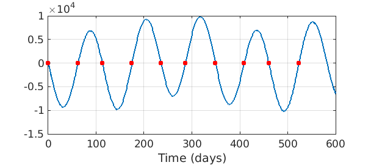

In an example in [1] the positions of Earth and Mercury are given, relative to the sun at one foci of their elliptical orbits at $(0,0)$, by the parametric equations
$$ x_M(t) = -11.9084+57.9117\cos(2\pi t/87.97), $$
$$ y_M(t) = 56.6741\sin(2\pi t/87.97), $$
$$ x_E(t) = -2.4987+149.6041\cos(2\pi t/365.25), $$
$$ y_E(t) = 149.5832\sin(2\pi t/365.25). $$
Conjunctions occur when Mercury is in a straight line configuration with the Earth and the Sun. A solution for the times of conjunctions can then be determined by the zeros of the cross product of the planets' position vectors on a time interval.
M = @(t) [-11.9084 + 57.9117 * cos(2*pi*t/87.97),...
56.6741 * sin(2*pi*t/87.97);
-2.4987 + 149.6041 * cos(2*pi*t/365.25),...
149.5832 * sin(2*pi*t/365.25)];
f = chebfun(@(t) det(M(t)),[0 600],'vectorize');
The roots of the determinant give the days at which a conjunction occurs.
z = roots(f);
To get a visual interpretation of the roots, one can plot the determinant and then plot zeros all at value $0$. The following figure depicts the times of the first ten conjunctions.
figure
plot(f,'linewidth',1.6), hold on, grid on
plot(z(1:10),0,'.r','markersize',20)
xlabel('Time (days)')

References
- Charles F. Van Loan, Introduction to Scientific Computing, Prentice-Hall, 1997, p. 274.